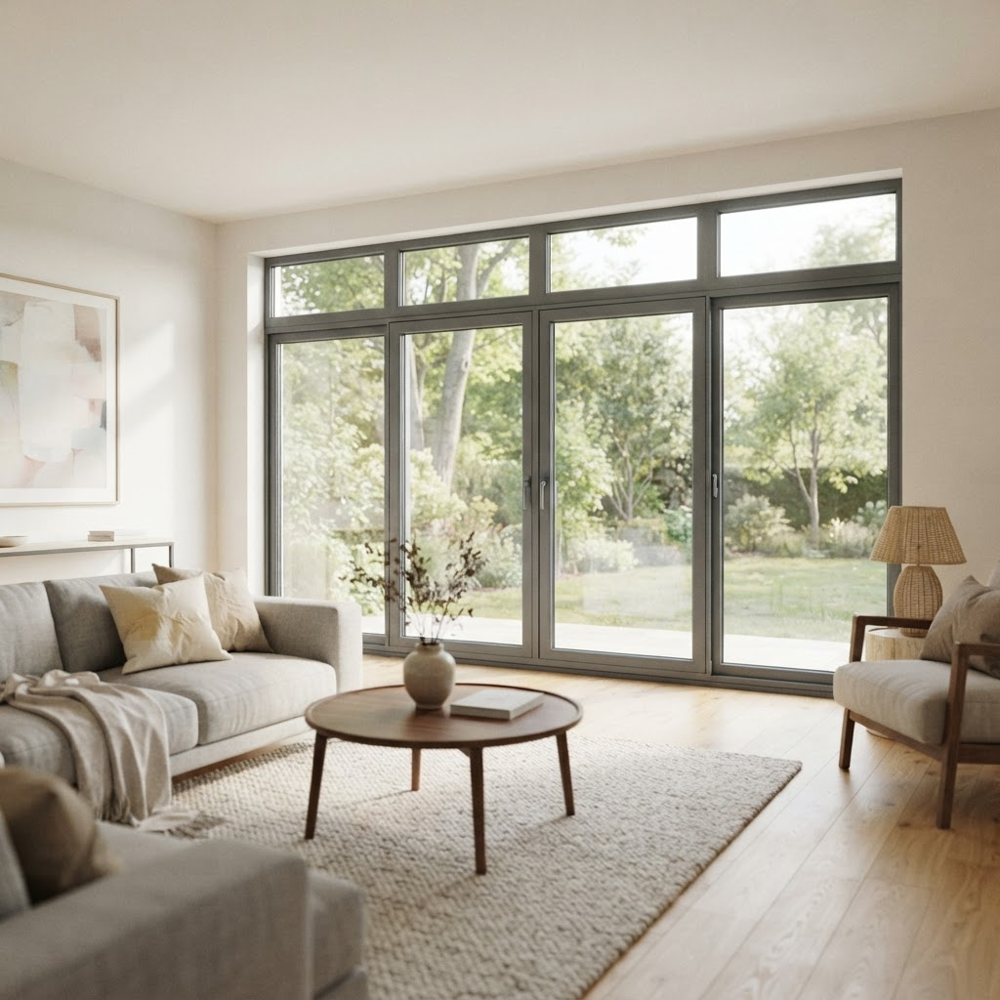

Выведение окна из режима проветривания в Центральном округе — что важно знать

Содержание
Центральный административный округ Москвы отличается высокой плотностью застройки и сложной архитектурой зданий, что накладывает особые требования на обслуживание оконных конструкций. Мы профессионально выполняем выведение окна из режима проветривания, обеспечивая надежность работы механизмов в жилых и коммерческих помещениях.
Порядок действий
Для начала сотрудничества закажите бесплатный замер, в ходе которого мастер рассчитает стоимость на объекте и зафиксирует цену в договоре.
Выведение окна из режима проветривания в Центральном округе — что важно знать
Ошибка при эксплуатации фурнитуры — частая причина блокировки створок. Пользователи нередко пытаются перевести окно из откидного положения в поворотное без фиксации ручки, что приводит к перекосу и зависанию фурнитуры. Наша задача — восстановить геометрию створки и обеспечить плавный ход механизма. Мы работаем с системами различной сложности, сохраняя качество заводской сборки. Процесс включает проверку состояния прижимных цапф, очистку пазов от строительной пыли, характерной для центра Москвы, и настройку ответных планок. Важно понимать, что силовое воздействие на заклинившую ручку только усугубляет проблему, деформируя металлические элементы запорного контура. Мастер проводит диагностику блокиратора и восстанавливает корректное положение створки без повреждения уплотнительного контура. Качественный подход исключает повторные заклинивания и продлевает срок службы всей оконной системы.
Сравнение самостоятельной регулировки и профессионального обслуживания
Попытки самостоятельного устранения проблемы часто базируются на информации из сети, которая не учитывает индивидуальные допуски конкретной фурнитуры. В домашних условиях пользователь рискует окончательно сорвать резьбу на регулировочных винтах или нарушить последовательность срабатывания ножниц. Самостоятельная работа нередко сводится к смазке петель, что не решает вопрос блокировки, если проблема кроется в геометрии рамы или износе блокиратора ошибочного действия. Профессиональный сервис — это точное инструментальное измерение диагоналей створки и коррекция расположения петлевой группы. Мы используем профильное оборудование, позволяющее настроить прижим с точностью до доли миллиметра. В то время как дилетантский подход дает временный эффект, наша работа гарантирует стабильную эксплуатацию фурнитуры в течение долгого времени. Качество настройки напрямую влияет на теплоизоляцию помещения, что крайне важно для старого фонда Центрального округа.
Почему окно заблокировалось именно в режиме проветривания?
Обычно это происходит из-за некорректного срабатывания блокиратора при резком переводе ручки из одного положения в другое. Механизм защиты от неправильного открывания не успевает зафиксировать створку, что приводит к ее зависанию на нижней петле. Профессиональная регулировка полностью устраняет эту причину.
Бесплатный замер
Оставьте заявку — специалист приедет в удобное время, проведет замеры, выполнит расчеты и зафиксирует итоговую стоимость в договоре.
Заказать остекление